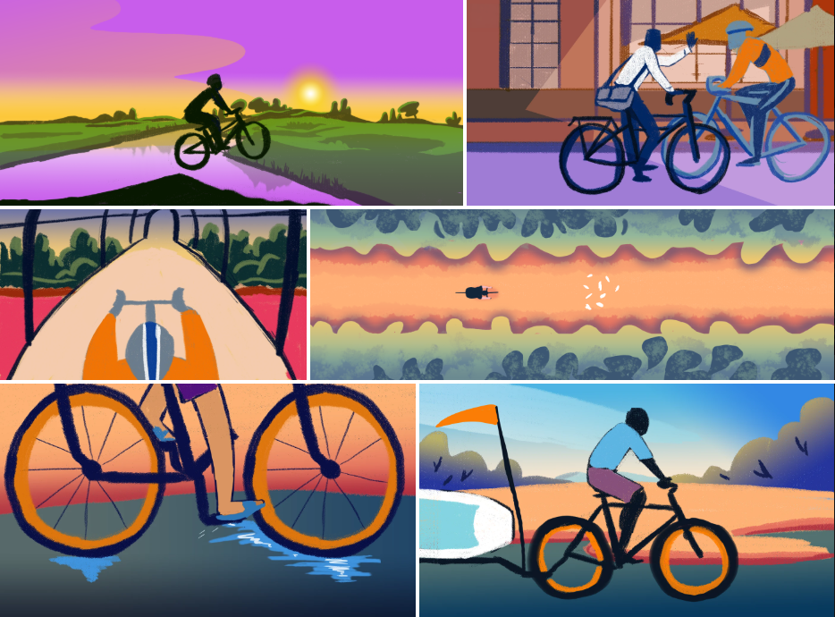
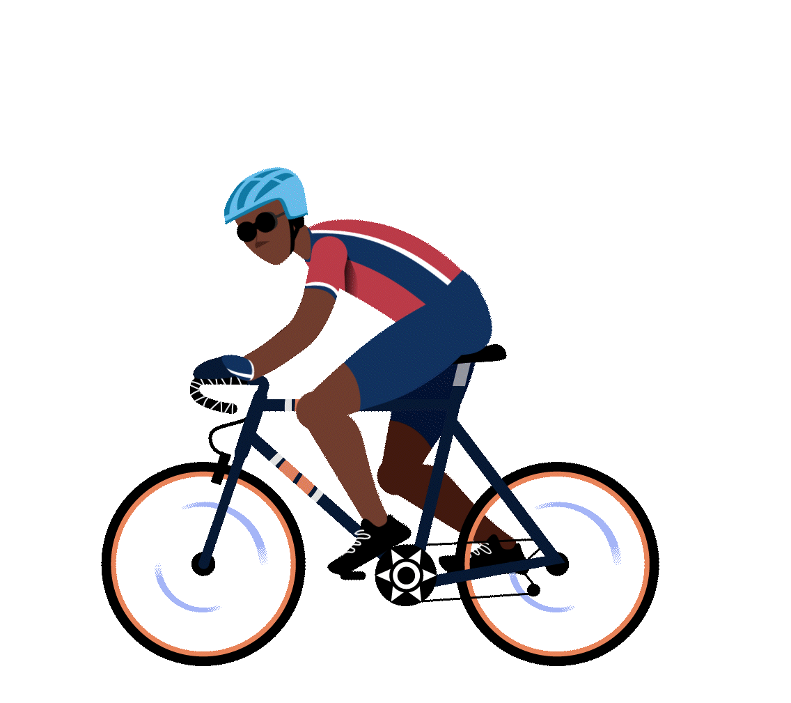
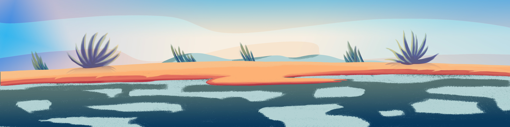
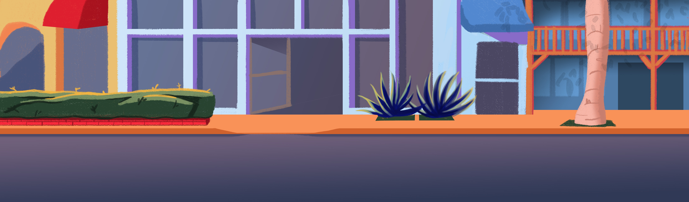
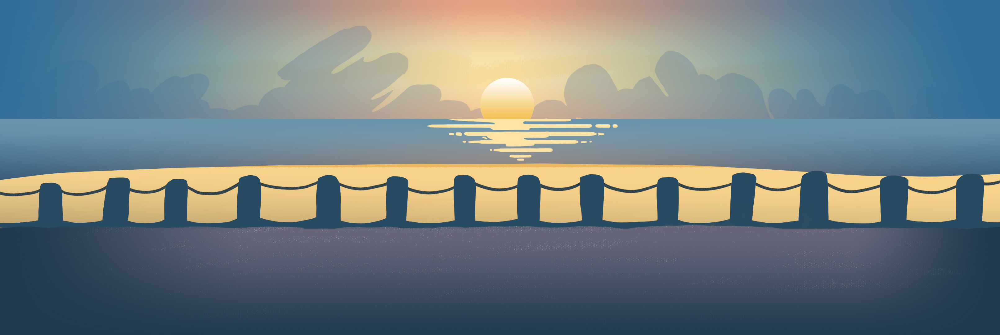
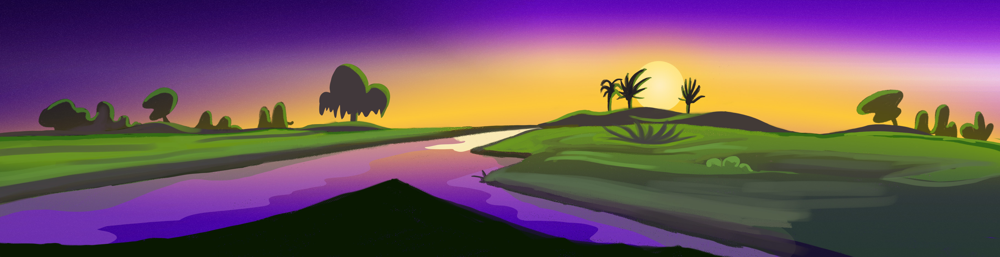
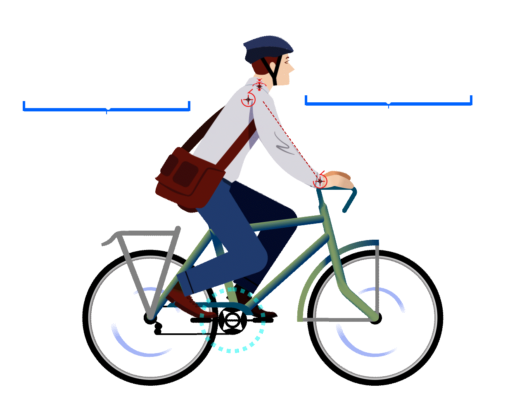
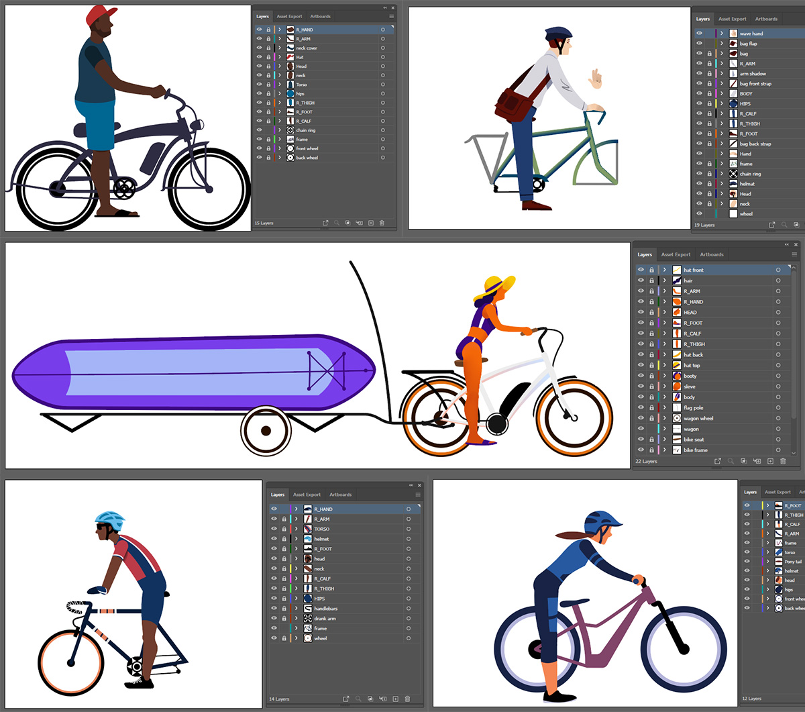

About this project
This project became a sort of passion project for me. The E-bikes and Cycles store wanted an animation for their webpage. I've been an e-cyclist for many years, so I was eager to share my love of this mode of active transportation through this project.


Backgrounds
I wanted this video to be Sarasota-specific so it couldn't just be carbon copied for any e-bike store. I began the project by studying Sarasota's cycling infrastructure. I had lived in Sarasota during college, but I wouldn't consider myself a cyclist then. I had nowhere to shelter a bike and they all rusted in the rain.
It rains twice a day in Sarasota, so I included wet roads, rides to the beach and swampy mountain bike trails. My favorite part was the Bee Ridge Road Legacy Trail. I wish I had ridden that trail when I lived there.





The Cyclists
Since joining the cycling community in Arizona, I've become familiar with the types of people who like to ride. I based many of these characters on myself and my friends. In order, there are: the couple with electric lowriding cruisers who ride for leisure, the work commuter, the paddle board hauler who rides an e-bike to make the journey easier, the roadie who rides for exercise and the mountain biker who hits the trails before work each day. The commuter and the roadie know each other from other cycling events. That's why they wave when they pass.
